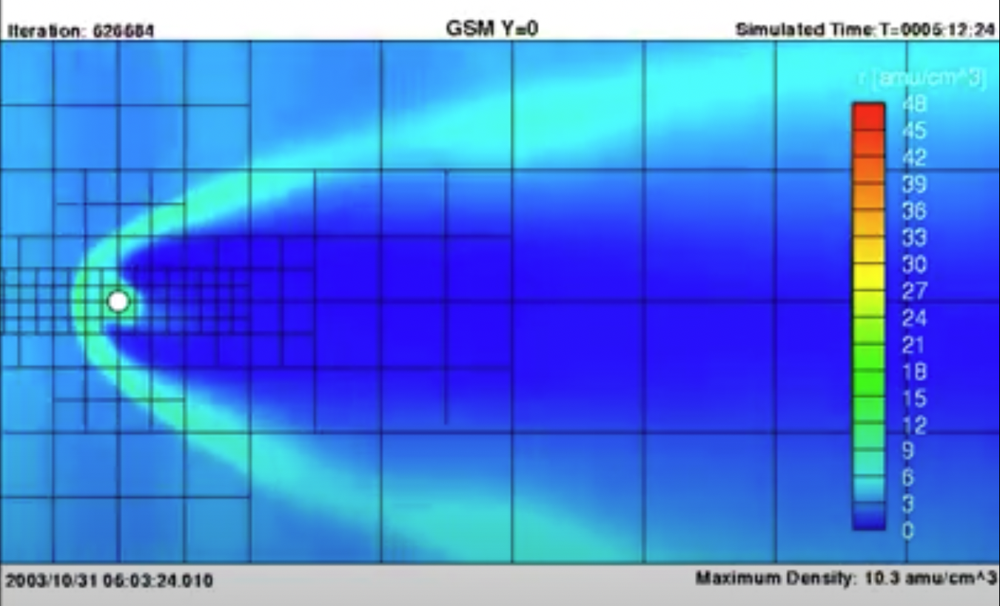
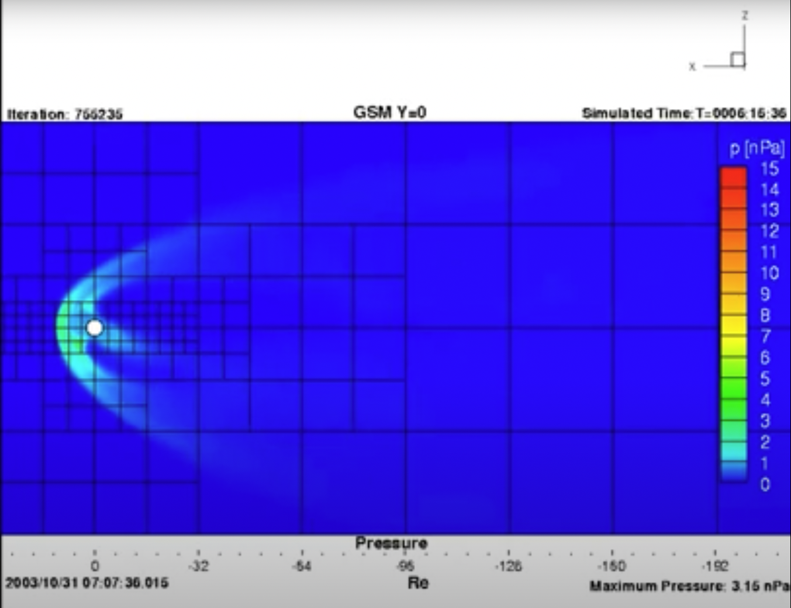

The solar wind is a stream of plasma that can be treated as an electrically conducting fluid. For my master's thesis, I simulated the interaction between the solar wind and Earth's magnetosphere using magnetohydrodynamics (MHD), which couples computational fluid dynamics with Maxwell's equations. I recently revisited my thesis-defense video, which contains visualizations from the simulation; the bow shock and magnetotail structures are clearly visible. The figures below show X–Z-plane slices in the ecliptic coordinate system of particle pressure and density from a simulation of the 2003 Halloween solar storms. Solar-wind parameters were obtained from ACE. The solar wind enters from the left, and the white dot marks Earth.


Created by Cong in 2020.